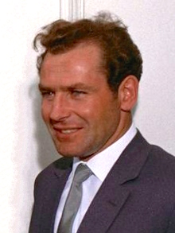
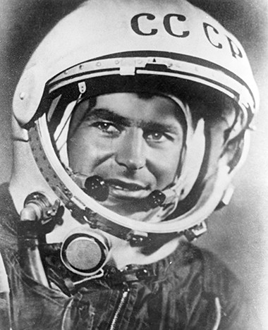

Полет Г. Титова

Герман Степанович Титов — советский космонавт, первый человек, совершивший длительный космический полёт, второй советский космонавт, второй человек в мире, совершивший орбитальный космический полёт, остаётся самым молодым космонавтом в истории. Герой Советского Союза.
Полет Титова длился целых 25 часов и 11 минут. За это продолжительное время Герман Степанович сделал 17 витков вокруг Земли. Совершив в августе 1961 года полет в Космос, Титов показал личным примером, что при должном уровне подготовки человек может жить и работать в Космосе. За 25 часов полета Титов многое успел сделать. Герман фотографировал нашу планету, впервые обедал в состояние невесомости и даже успел поспать.
